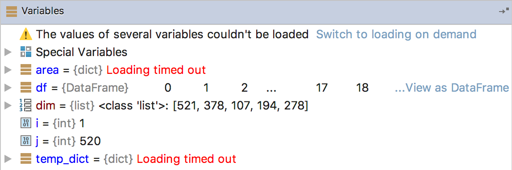

If loading variables during debugging takes a long time, you might see the Loading timed out warning messages.
Click the Switch to loading on demand link in the Variables window to switch to the mode when variables are loaded on user's request.
